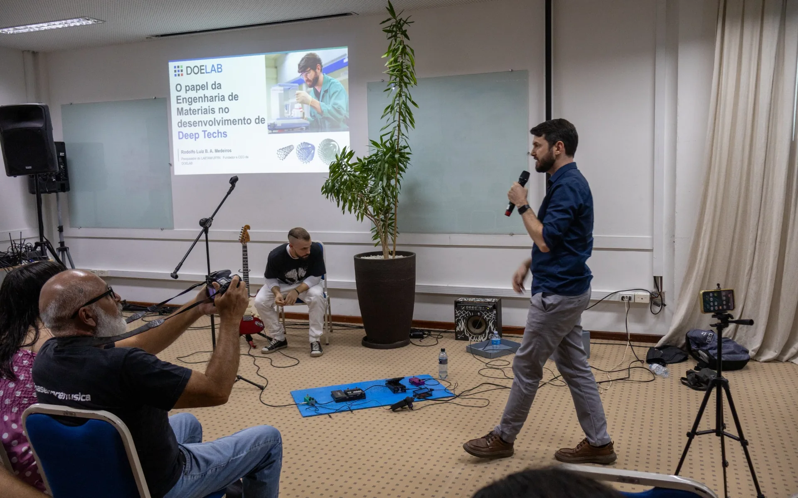
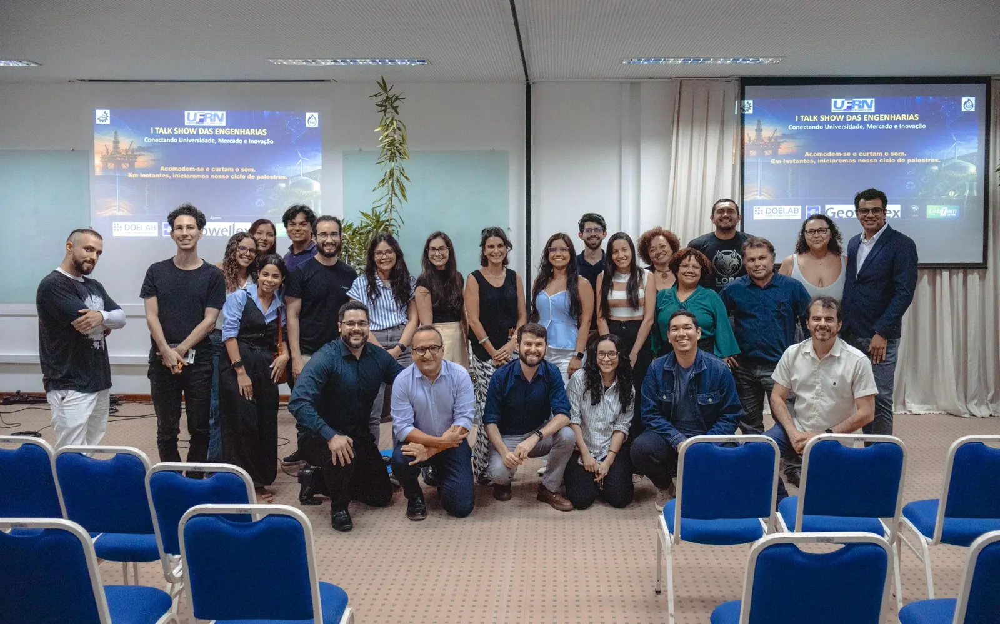
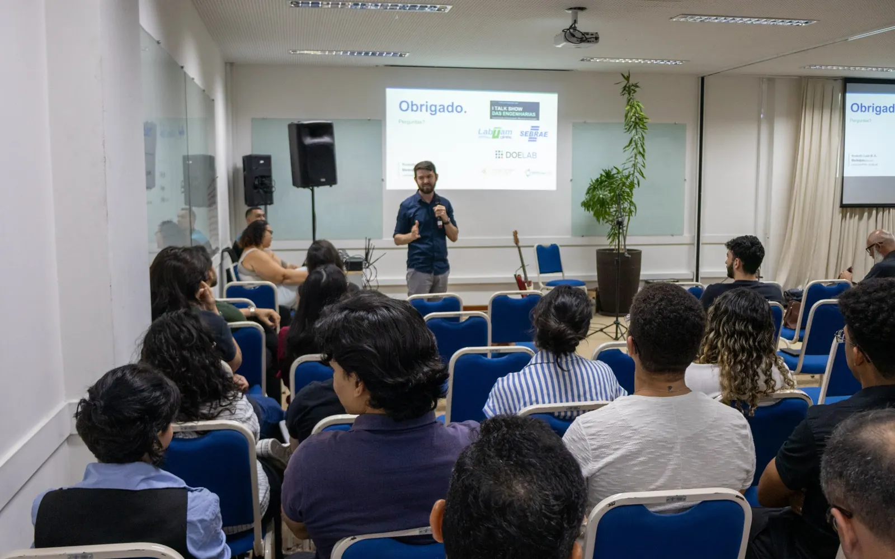
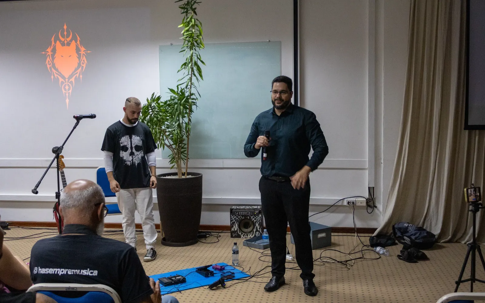
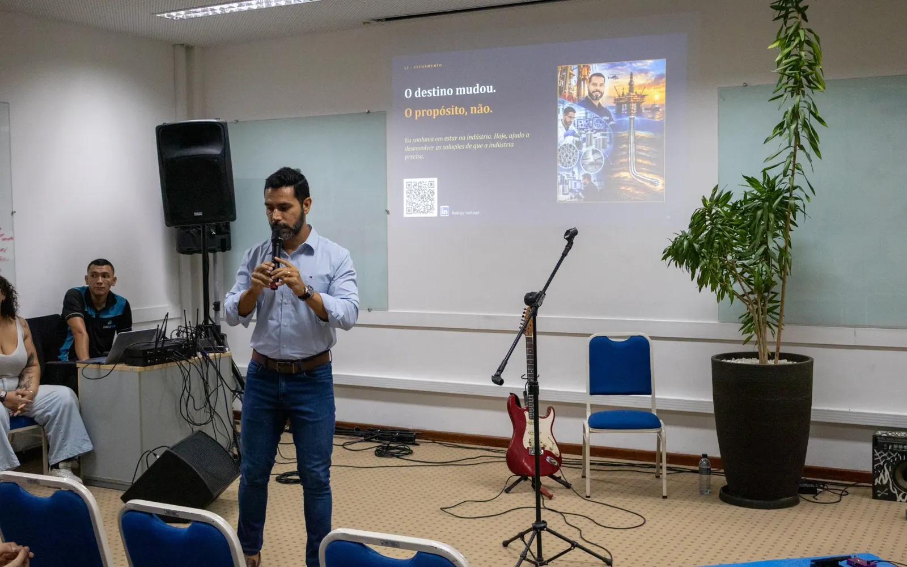
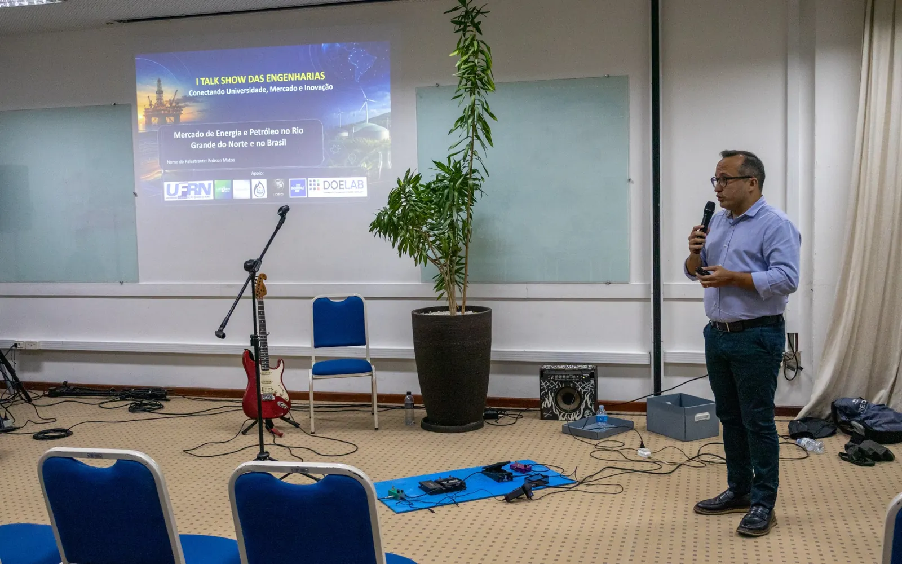
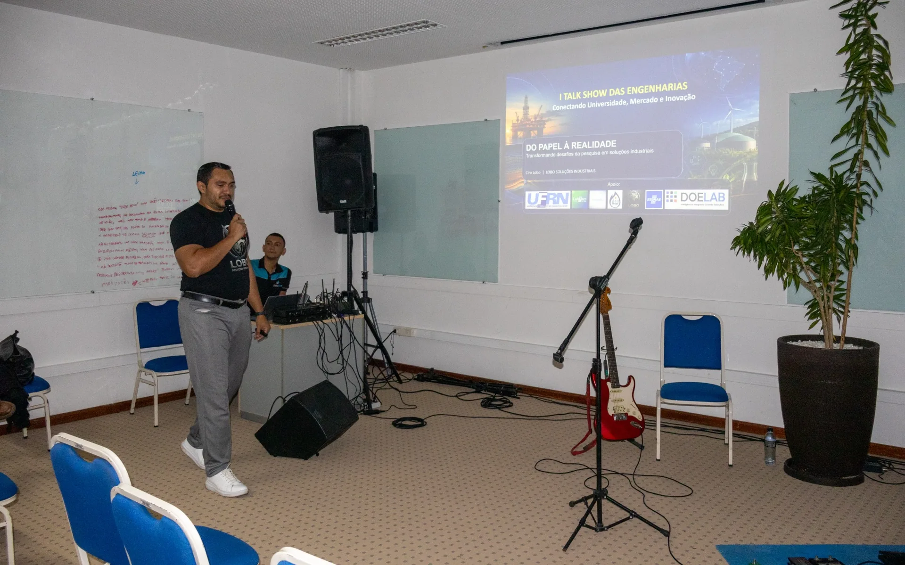
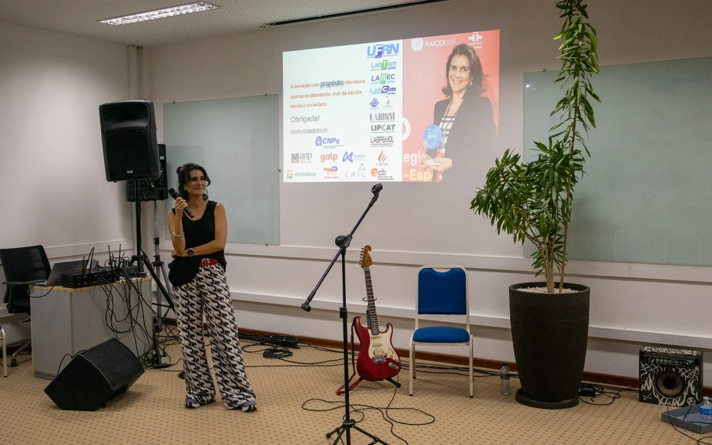
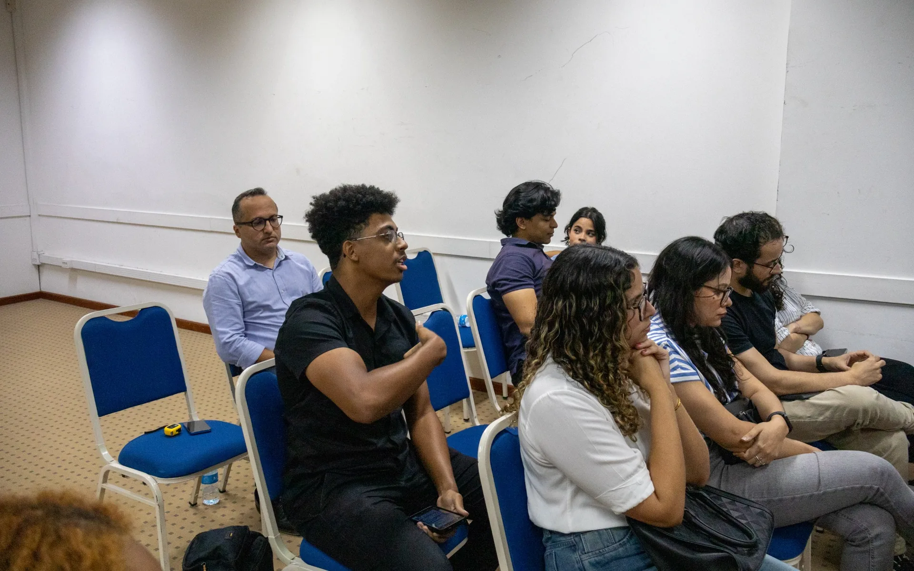

01 / PESQUISA E TECNOLOGIA
Onde os materiais encontram o futuro
Engenharia de Materiais e Deep Techs: ciência transformada em tecnologia.
Rodolfo LuizPesquisador · LabTam/UFRN
ESPECIAL · MEMÓRIA 2026
Um encontro para aproximar quem pesquisa, quem ensina e quem transforma conhecimento em soluções.

I EDIÇÃO · NATAL / RNUniversidade, mercado e inovação
O I Talk Show das Engenharias reuniu diferentes experiências para discutir a formação profissional e os desafios da pesquisa e da indústria.
Realizado em 15 de outubro de 2026, no Sebrae, em Natal, o encontro aproximou pesquisadores, professores, profissionais e estudantes em uma programação dedicada às engenharias.
Materiais avançados, energia, petróleo, inovação e sustentabilidade estiveram entre os assuntos apresentados. O evento também abriu espaço para trajetórias profissionais, perguntas e troca de experiências.
Conhecer os temas e participantes

Da sala de aula para a pesquisa, a indústria e a sociedade.
A programação
Pesquisa aplicada, carreira, setor energético e sustentabilidade em uma tarde de troca de experiências.

Engenharia de Materiais e Deep Techs: ciência transformada em tecnologia.

Formação profissional, carreira e desafios reais do mercado de petróleo e gás.

Oportunidades e perspectivas para energia e petróleo no RN e no Brasil.

Experiências e soluções tecnológicas que aproximam a pesquisa da indústria.

Pirólise, energia da biomassa e caminhos da pesquisa brasileira.
Os resumos apresentam os temas destacados na cobertura do Portal da UFRN e não constituem transcrições integrais das falas.
A proposta do encontro
Nossa ideia foi proporcionar uma conversa que fosse além dos conteúdos apresentados em sala de aula.
Ângelo Anderson de OliveiraOrganizador · PPgEP/UFRN

DIÁLOGO E CONHECIMENTOMemória visual · Edição 2026
Palestras, encontros e bastidores da primeira edição. Clique nas fotografias para ampliar e baixar.
Carregando fotografias…
Fotografias: Rodrigo Melo · Arquivos em WebP otimizado, até 1.920 px no lado maior.
Primeira edição
O Talk Show aproximou a formação acadêmica das práticas e oportunidades do setor produtivo. Este especial reúne os assuntos, os participantes e os momentos da primeira edição.
Leia a cobertura jornalística do encontro publicada no portal da Universidade Federal do Rio Grande do Norte.